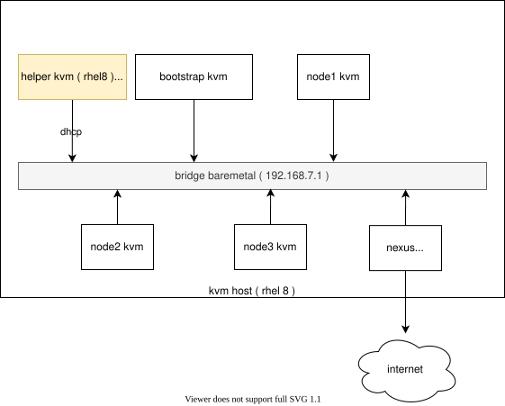
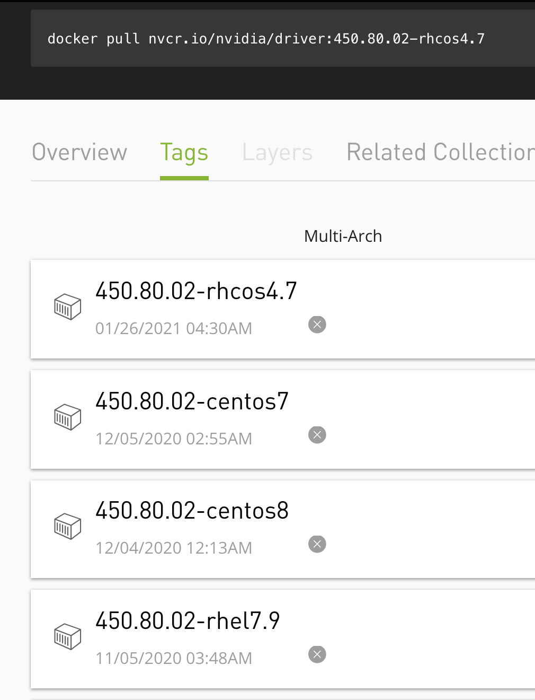
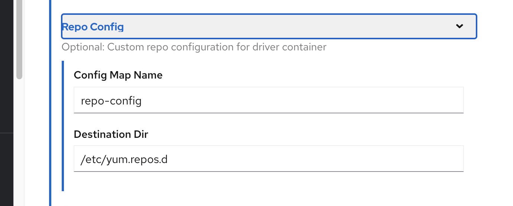
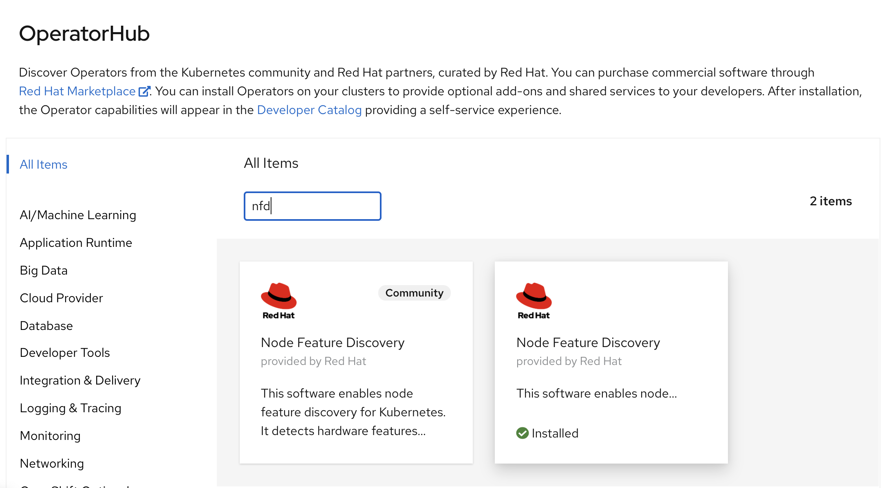
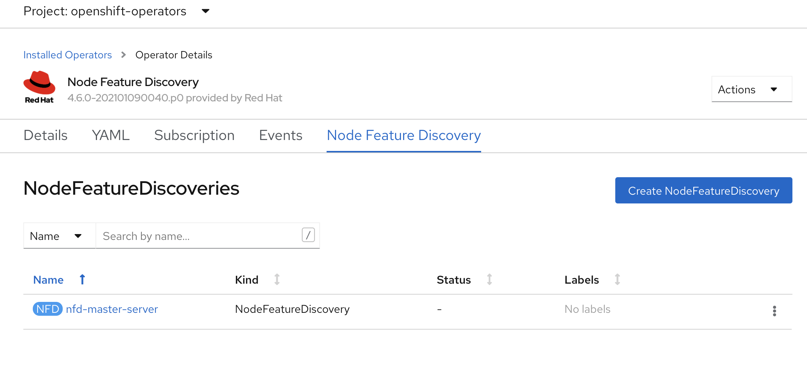
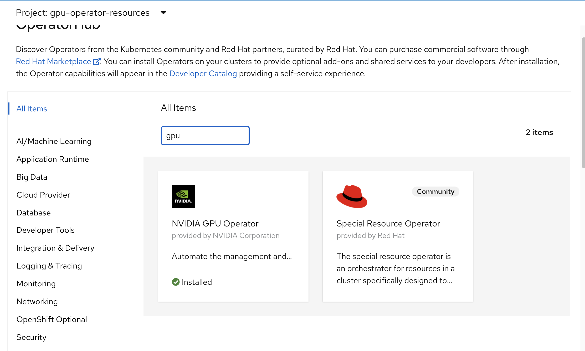
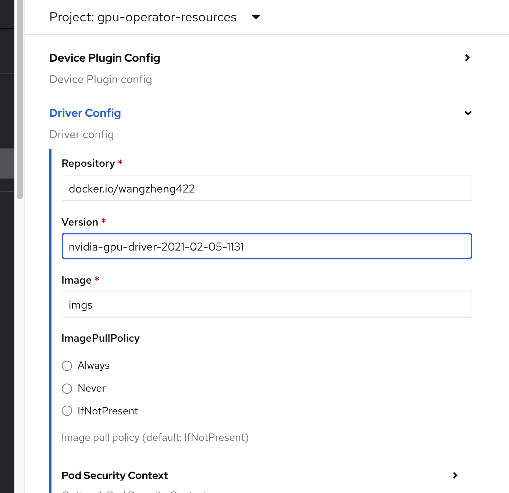
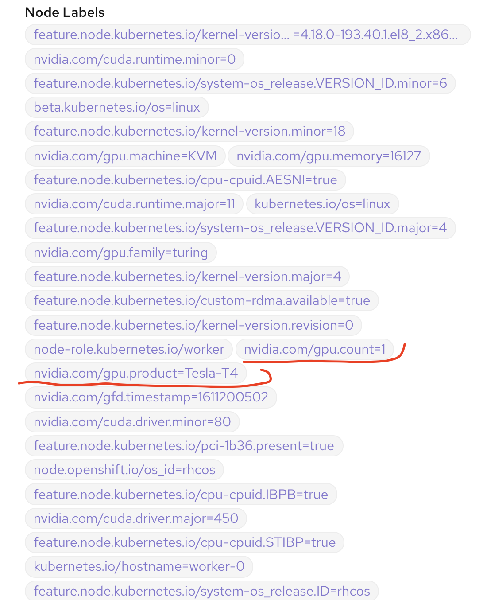

nvidia gpu for openshift 4.6 disconnected 英伟达GPU离线安装
简介
本次实验是openshift 边缘 GPU 场景的一部分，主要关注于nvidia gpu如何在离线的情况下安装。关于如何 gpu passthrough 到kvm，模拟边缘gpu主机，见这个文档
以下是讲解视频
以下是本次实验的架构图:

制作 rhel8 repo / 安装源
nvidia gpu operator需要在线下载包，来编译driver，那么在离线场景，我们就需要先准备一个rhel8 的 repo。
export PROXY="127.0.0.1:18801"
subscription-manager --proxy=$PROXY release --list
subscription-manager --proxy=$PROXY release --set=8
subscription-manager --proxy=$PROXY repos --disable="*"
subscription-manager --proxy=$PROXY repos \
--enable="rhel-8-for-x86_64-baseos-rpms" \
--enable="rhel-8-for-x86_64-baseos-source-rpms" \
--enable="rhel-8-for-x86_64-appstream-rpms" \
--enable="rhel-8-for-x86_64-supplementary-rpms" \
--enable="codeready-builder-for-rhel-8-x86_64-rpms" \
--enable="rhocp-4.6-for-rhel-8-x86_64-rpms" \
--enable="rhel-8-for-x86_64-baseos-eus-rpms" \
# endline
mkdir -p /data/dnf/gaps
cd /data/dnf/gaps
# subscription-manager --proxy=$PROXY release --set=8.2
# subscription-manager --proxy=$PROXY release --set=8
# dnf -y install https://dl.fedoraproject.org/pub/epel/epel-release-latest-8.noarch.rpm
dnf copr enable frostyx/modulemd-tools
dnf install -y modulemd-tools
# dnf install -y https://kojipkgs.fedoraproject.org//packages/modulemd-tools/0.9/1.fc32/noarch/modulemd-tools-0.9-1.fc32.noarch.rpm
# 注意，这里需要的包，需要先部署一下gpu operator，然后看看driver的日志，里面装什么包，这里替换成相应的包，不同版本的gpu operator要求不同，所以这里的包也不一样。
/bin/rm -rf /data/dnf/gaps/*
# dnf download --resolve --releasever=8.2 --alldeps \
# --repo rhel-8-for-x86_64-baseos-eus-rpms,rhel-8-for-x86_64-baseos-rpms,rhel-8-for-x86_64-appstream-rpms,ubi-8-baseos,ubi-8-appstream \
# kernel-headers.x86_64 kernel-devel.x86_64 kernel-core.x86_64 systemd-udev.x86_64 elfutils-libelf.x86_64 elfutils-libelf-devel.x86_64 \
# kernel-headers-4.18.0-193.40.1.el8_2.x86_64 kernel-devel-4.18.0-193.40.1.el8_2.x86_64 kernel-core-4.18.0-193.40.1.el8_2.x86_64 systemd-udev-239-31.el8_2.2.x86_64 kernel-headers-4.18.0-193.41.1.el8_2.x86_64 kernel-devel-4.18.0-193.41.1.el8_2.x86_64 \
# elfutils-libelf-0.180-1.el8.x86_64
subscription-manager --proxy=$PROXY release --set=8.2
dnf download --resolve --releasever=8.2 --alldeps \
--repo rhel-8-for-x86_64-baseos-eus-rpms,rhel-8-for-x86_64-baseos-rpms,rhel-8-for-x86_64-appstream-rpms,ubi-8-baseos,ubi-8-appstream \
kernel-headers.x86_64 kernel-devel.x86_64 kernel-core.x86_64 systemd-udev.x86_64 elfutils-libelf.x86_64 elfutils-libelf-devel.x86_64 \
kernel-headers-4.18.0-193.41.1.el8_2.x86_64 kernel-devel-4.18.0-193.41.1.el8_2.x86_64 kernel-core-4.18.0-193.41.1.el8_2.x86_64
subscription-manager --proxy=$PROXY release --set=8
dnf download --resolve --alldeps \
--repo rhel-8-for-x86_64-baseos-rpms,rhel-8-for-x86_64-appstream-rpms,ubi-8-baseos,ubi-8-appstream \
elfutils-libelf.x86_64 elfutils-libelf-devel.x86_64
# https://access.redhat.com/solutions/4907601
createrepo ./
repo2module . \
--module-name foo \
--module-stream devel \
--module-version 123 \
--module-context f32
createrepo_mod .现在，本机的 /data/dnf/gaps/ 目录，就是repo的目录了，做一个ftp服务，把他暴露出去就好了。具体方法，参考这里
修改英伟达驱动镜像 / nvidia driver image
默认 nvidia gpu driver pod 是需要联网下载各种包的，这里面还涉及到订阅，非常麻烦，而且离线无法使用。
我们刚才已经做了一个离线的repo仓库，那么我们就需要定制一下driver image，让他直接用离线的repo仓库就好了。
官方driver镜像下载： https://ngc.nvidia.com/catalog/containers/nvidia:driver/tags

mkdir -p /data/install/
cd /data/install
# /bin/rm -rf /etc/yum.repos.d/*
export YUMIP="192.168.7.1"
cat << EOF > ./remote.repo
[gaps]
name=gaps
baseurl=ftp://${YUMIP}/dnf/gaps
enabled=1
gpgcheck=0
EOF
oc create configmap repo-config -n gpu-operator-resources --from-file=./remote.repo可以使用oeprator UI 来安装ClusterPolicy，注意调整driver config 的 repo config : repo-config -> /etc/yum.repos.d

定制driver config image
如果我们对driver config image有特殊需求，那么这样定制
here is an reference: https://github.com/dmc5179/nvidia-driver
有人把 rpm 包直接装在driver image里面了，也是一个很好的思路。
# driver image
# nvidia-driver-daemonset
podman pull nvcr.io/nvidia/driver:450.80.02-rhcos4.6
# you can test the driver image, like this:
# podman run --rm -it --entrypoint='/bin/bash' nvcr.io/nvidia/driver:450.80.02-rhcos4.6
podman run --rm -it --entrypoint='/bin/bash' nvcr.io/nvidia/driver:460.32.03-rhcos4.6
mkdir -p /data/gpu/
cd /data/gpu
export YUMIP="192.168.7.1"
cat << EOF > /data/gpu/remote.repo
[gaps]
name=gaps
baseurl=ftp://${YUMIP}/dnf/gaps
enabled=1
gpgcheck=0
EOF
cat << EOF > /data/gpu/Dockerfile
FROM nvcr.io/nvidia/driver:450.80.02-rhcos4.6
RUN /bin/rm -rf /etc/yum.repos.d/*
COPY remote.repo /etc/yum.repos.d/remote.repo
EOF
var_date=$(date '+%Y-%m-%d-%H%M')
echo $var_date
buildah bud --format=docker -t docker.io/wangzheng422/imgs:nvidia-gpu-driver-$var_date-rhcos4.6 -f Dockerfile .
# podman run --rm -it --entrypoint='/bin/bash' docker.io/wangzheng422/imgs:nvidia-gpu-driver-2021-01-21-0942
buildah push docker.io/wangzheng422/imgs:nvidia-gpu-driver-$var_date-rhcos4.6
echo "docker.io/wangzheng422/imgs:nvidia-gpu-driver-$var_date-rhcos4.6"
# docker.io/wangzheng422/imgs:nvidia-gpu-driver-2021-02-05-1131-rhcos4.6好了，我们最后制作好的镜像，使用tag的实话，注意要省略到后面的 rhcos4.6， 因为operator UI 会自动补全。
开始离线安装gpu operator
参考nvidia官方的安装文档
首先，我们要安装 node feature discovery (nfd)，在以前，nfd只能扫描独立worker节点，所以 3 节点的edge模式，那个时候不支持的。在后面的版本里面，nfd修复了这个漏洞，3节点的edge模式也支持了。

然后给nfd做一个配置，直接点击创建就可以，什么都不用改，注意namespace是openshift-operator

接下来，我们先创建一个namespace gpu-operator-resources, 然后安装 nvidia gpu operator

我们在gpu operator里面，创建一个cluster policy，注意要修改他的参数。这里给的例子是定制过driver镜像的，如果没定制，不用修改这个参数。

最后我们从 node label 上就能看见识别到的 gpu 了。

测试一下
# 先按照官方文档试试
oc project gpu-operator-resources
POD_NAME=$(oc get pods -o json | jq -r '.items[] | select( .metadata.name | contains("nvidia-driver-daemonset") ) | .metadata.name' | head )
oc exec -it $POD_NAME -- nvidia-smi
# Thu Jan 21 04:12:36 2021
# +-----------------------------------------------------------------------------+
# | NVIDIA-SMI 450.80.02 Driver Version: 450.80.02 CUDA Version: 11.0 |
# |-------------------------------+----------------------+----------------------+
# | GPU Name Persistence-M| Bus-Id Disp.A | Volatile Uncorr. ECC |
# | Fan Temp Perf Pwr:Usage/Cap| Memory-Usage | GPU-Util Compute M. |
# | | | MIG M. |
# |===============================+======================+======================|
# | 0 Tesla T4 On | 00000000:05:00.0 Off | Off |
# | N/A 27C P8 14W / 70W | 0MiB / 16127MiB | 0% Default |
# | | | N/A |
# +-------------------------------+----------------------+----------------------+
# +-----------------------------------------------------------------------------+
# | Processes: |
# | GPU GI CI PID Type Process name GPU Memory |
# | ID ID Usage |
# |=============================================================================|
# | No running processes found |
# +-----------------------------------------------------------------------------+
# 我们再启动个应用试试
# https://nvidia.github.io/gpu-operator/
# https://ngc.nvidia.com/catalog/containers/nvidia:tensorrt
# 我们按照这个官方文档，做一个测试镜像
# goto helper
cd /data/ocp4
cat << EOF > /data/ocp4/gpu.yaml
---
kind: Deployment
apiVersion: apps/v1
metadata:
annotations:
name: demo1
labels:
app: demo1
spec:
replicas: 1
selector:
matchLabels:
app: demo1
template:
metadata:
labels:
app: demo1
spec:
nodeSelector:
kubernetes.io/hostname: 'worker-0'
restartPolicy: Always
containers:
- name: demo1
image: "nvcr.io/nvidia/k8s/cuda-sample:vectoradd-cuda10.2-ubi8"
EOF
oc project demo
oc apply -f gpu.yaml
# [Vector addition of 50000 elements]
# Copy input data from the host memory to the CUDA device
# CUDA kernel launch with 196 blocks of 256 threads
# Copy output data from the CUDA device to the host memory
# Test PASSED
# Done
oc delete -f gpu.yaml
# on build host
# https://ngc.nvidia.com/catalog/containers/nvidia:tensorrt
# podman run -it nvcr.io/nvidia/tensorrt:20.12-py3
mkdir -p /data/gpu
cd /data/gpu
cat << EOF > /data/gpu/Dockerfile
FROM docker.io/wangzheng422/imgs:tensorrt-ljj
CMD tail -f /dev/null
EOF
var_date=$(date '+%Y-%m-%d-%H%M')
echo $var_date
buildah bud --format=docker -t docker.io/wangzheng422/imgs:tensorrt-ljj-$var_date -f Dockerfile .
buildah push docker.io/wangzheng422/imgs:tensorrt-ljj-$var_date
echo "docker.io/wangzheng422/imgs:tensorrt-ljj-$var_date"
# docker.io/wangzheng422/imgs:tensorrt-ljj-2021-01-21-1151
# go back to helper node
cat << EOF > /data/ocp4/gpu.yaml
---
kind: Deployment
apiVersion: apps/v1
metadata:
annotations:
name: demo1
labels:
app: demo1
spec:
replicas: 1
selector:
matchLabels:
app: demo1
template:
metadata:
labels:
app: demo1
spec:
nodeSelector:
kubernetes.io/hostname: 'worker-0'
restartPolicy: Always
containers:
- name: demo1
image: docker.io/wangzheng422/imgs:tensorrt-ljj-2021-01-21-1151
EOF
oc project demo
oc apply -f gpu.yaml
# oc rsh into the pod, run sample program using gpu
# cd tensorrt/bin/
# ./sample_mnist
# you will see this correct result
# &&&& PASSED TensorRT.sample_mnist # ./sample_mnist
oc delete -f gpu.yaml
tips
- 如果发现nfd不能发现gpu型号，node reboot就好了
- 如果发现gpu feature discovery不正常， node reboot就好了
cat /proc/driver/nvidia/versionreference
https://www.openshift.com/blog/simplifying-deployments-of-accelerated-ai-workloads-on-red-hat-openshift-with-nvidia-gpu-operator
https://www.openshift.com/blog/how-to-use-entitled-image-builds-to-build-drivercontainers-with-ubi-on-openshift
https://access.redhat.com/solutions/5232901
https://docs.nvidia.com/datacenter/kubernetes/openshift-on-gpu-install-guide/
https://access.redhat.com/solutions/4907601
https://docs.nvidia.com/datacenter/tesla/tesla-installation-notes/index.html
以下弯路
# add ubi support
cat << EOF > /etc/yum.repos.d/ubi.repo
[ubi-8-baseos]
name=ubi-8-baseos
baseurl=https://cdn-ubi.redhat.com/content/public/ubi/dist/ubi8/8/x86_64/baseos/os
enabled=1
gpgcheck=1
[ubi-8-appstream]
name=ubi-8-appstream
baseurl=https://cdn-ubi.redhat.com/content/public/ubi/dist/ubi8/8/x86_64/appstream/os
enabled=1
gpgcheck=1
[ubi-8-codeready-builder]
name=ubi-8-codeready-builder
baseurl=https://cdn-ubi.redhat.com/content/public/ubi/dist/ubi8/8/x86_64/codeready-builder/os/
enabled=1
gpgcheck=1
EOF
cd /data/dnf
dnf reposync -m --download-metadata --delete -n
cat << EOF > /data/ocp4/gpu.yaml
---
kind: Deployment
apiVersion: apps/v1
metadata:
annotations:
name: demo1
labels:
app: demo1
spec:
replicas: 1
selector:
matchLabels:
app: demo1
template:
metadata:
labels:
app: demo1
spec:
nodeSelector:
kubernetes.io/hostname: 'worker-0'
restartPolicy: Always
containers:
- name: demo1
image: nvidia/cuda:11.1.1-devel-centos8
EOF
oc project demo
oc apply -f gpu.yaml
oc delete -f gpu.yaml
cat << EOF > /data/gpu/Dockerfile
FROM nvcr.io/nvidia/tensorrt:20.12-py3
RUN /opt/tensorrt/python/python_setup.sh
RUN /opt/tensorrt/install_opensource.sh
RUN /opt/tensorrt/install_opensource.sh -b master
# RUN cd /workspace/tensorrt/samples && make -j4
CMD tail -f /dev/null
EOF